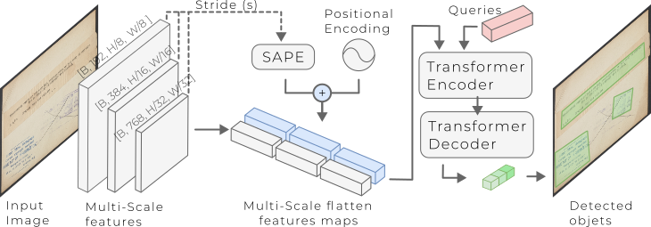
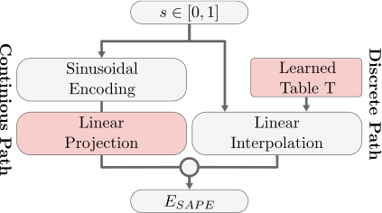
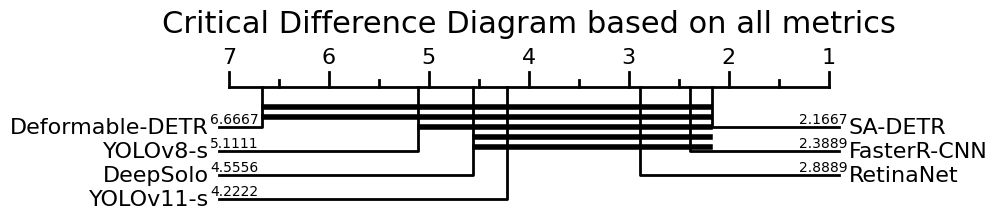

Scale-Aware Feature-Level Encoding for Historical Document Stamp Detection
International Workshop on Document Analysis Systems (DAS 2026), Vienna, Austria
Lecture Notes in Computer Science, vol. 16851, pp. 195–212, Springer
Paper · Code · Forbin dataset
Summary
Administrative stamps authenticate, validate and identify the institutions behind historical documents. They also trace a document's provenance and circulation, helping historians reconstruct institutional workflows. Detecting them automatically is difficult: documents are degraded, stamps vary widely in shape and size, and they can appear anywhere on the page.
We propose SA-DETR, a transformer-based stamp detector built on DeepSolo. Detection transformers usually encode scale with one discrete embedding per level of the feature pyramid. SA-DETR replaces it with a Scale-Aware Positional Encoding (SAPE) that treats scale as a continuous signal.

SAPE takes the normalized scale s ∈ [0, 1] of each feature level and combines two paths: an interpolation between learned scale anchors, which captures the overall scale structure, and a sinusoidal projection, which captures fine scale variations.

Results
SA-DETR was evaluated on three historical datasets: Forbin, HistPostCard and StaVer. It obtains the best mAP and AP75 on Forbin and the best AP75 on HistPostCard, and improves the mAP of DeepSolo, on which it is built, on all three datasets.
| Method | Forbin | HistPostCard | StaVer | ||||||
|---|---|---|---|---|---|---|---|---|---|
| mAP | AP50 | AP75 | mAP | AP50 | AP75 | mAP | AP50 | AP75 | |
| Faster R-CNN | 34.06 | 75.73 | 25.93 | 82.60 | 99.50 | 94.10 | 70.84 | 96.00 | 78.56 |
| RetinaNet | 30.83 | 72.57 | 22.61 | 86.80 | 100.00 | 94.10 | 76.36 | 95.53 | 84.20 |
| YOLOv8-s | 32.73 | 73.25 | 24.83 | 77.70 | 94.30 | 89.20 | 57.70 | 81.70 | 62.20 |
| YOLOv11-s | 33.73 | 74.82 | 26.02 | 78.50 | 94.10 | 91.80 | 61.27 | 81.99 | 67.99 |
| Deform. DETR | 27.79 | 68.20 | 18.47 | 52.20 | 83.10 | 64.40 | 55.34 | 89.77 | 61.55 |
| DeepSolo | 44.14 | 68.73 | 50.31 | 56.11 | 92.01 | 63.53 | 67.46 | 95.01 | 74.02 |
| SA-DETR (ours) | 46.19 | 74.91 | 50.35 | 76.82 | 100.00 | 95.66 | 70.78 | 95.48 | 80.10 |
To compare the methods across all datasets and metrics, we rank them on each of the nine columns above and average the ranks. SA-DETR obtains the best average rank (2.17), ahead of Faster R-CNN (2.39) and RetinaNet (2.89).

Citation
@inproceedings{chelali_DAS_2026,
author = {Chelali, Mohamed and Cloppet, Florence and Kurtz, Camille and
Bloch, Isabelle and Foliard, Daniel},
title = {Scale-Aware Feature-Level Encoding for Historical Document Stamp Detection},
booktitle = {International Workshop on Document Analysis Systems -- DAS 2026},
series = {Lecture Notes in Computer Science},
volume = {16851},
pages = {195--212},
year = {2026},
month = {sep},
address = {Vienna, Austria},
publisher = {Springer Nature Switzerland},
isbn = {978-3-032-36207-0},
doi = {10.1007/978-3-032-36207-0_12}
}